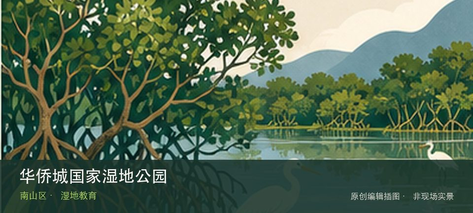

适合谁
适合观鸟、自然教育和安静慢行；不适合携宠、投喂或为拍照进入保育区域。

SHENZHEN GUIDE · 075
华侨城 · 湿地教育
华侨城国家湿地公园位于华侨城，预约制管理保护城市中心少见的滨海湿地生境，核心体验是导览中的鸟类、红树林和水位观察而非自由穿行。这处地点的内容并不靠规模取胜，预约导览路线和红树林与水鸟生境才是最值得核对的现场证据。观察重点是预约导览路线与红树林与水鸟生境之间的生境关系，而不是追逐动物或进入滩涂取景。保持距离、不投喂，并把水位、蚊虫、暴晒和雷雨作为当天是否停留的判断条件。
WHY GO
适合观鸟、自然教育和安静慢行；不适合携宠、投喂或为拍照进入保育区域。
先完成官方预约并确认集合入口，跟随开放路线观察红树林与水鸟；不脱离导览进入保育区。
公共交通先到华侨城片区，再以华侨城国家湿地公园公开参观入口为终点；多入口地点须按计划游线选择入口，并预先锁定返程站点。
导航至华侨城国家湿地公园官方开放入口配套或邻近正规公共停车场；周末满位即改乘公共交通，不在绿道口、村道或消防通道临停。
11 月至次年 3 月通常更适合观鸟；春夏注意蚊虫、暴晒、雷雨与水位变化，不进入生态保育区域。
NEARBY IDEAS
 授权实景图
授权实景图
何香凝美术馆位于华侨城，以何香凝艺术、二十世纪中国美术研究和当代专题展构成稳定学术方向，馆舍与华侨城文化设施可顺路组合。
 编辑配图·非现场实景
编辑配图·非现场实景
锦绣中华民俗文化村把中国名胜缩景、民族文化村落和现场演艺放进华侨城的一条主题游线，适合用半天到一天建立对不同地域景观与民俗叙事的整体印象。
 编辑配图·非现场实景
编辑配图·非现场实景
欢乐海岸把滨水空间、商业休闲、餐饮和文化活动组织成一处城市度假型景区，适合在深圳湾片区安排一段低强度的傍晚散步，也适合把活动、消费和公共空间分开看。